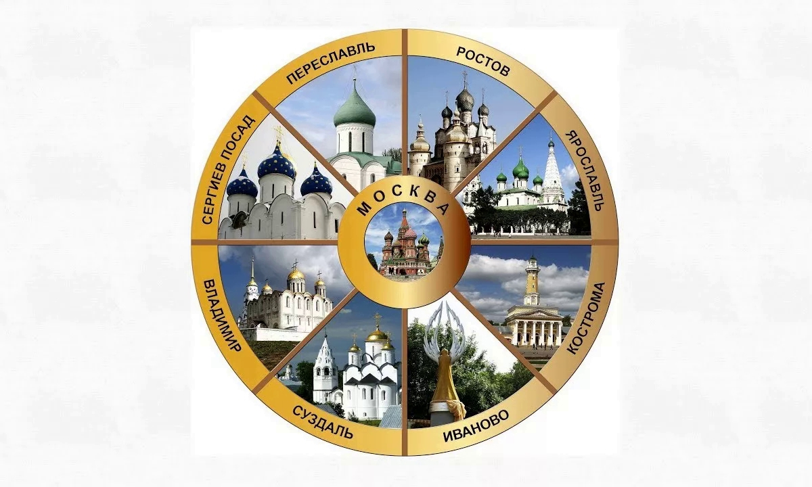

Что такое Золотое кольцо
Золотое кольцо России — это туристический маршрут по древним городам Центральной России. В него входят города, где сохранились старинные храмы, монастыри, кремли и деревянная архитектура.
Маршрут придумали в 1960-х годах, и с тех пор он остаётся одним из самых популярных направлений для туристов, которые хотят увидеть настоящую историю России, а не только Москву и Санкт-Петербург.

Почему стоит поехать
- Старинные города с историей в несколько веков
- Белокаменные храмы и монастыри
- Русская природа и тихие провинциальные улочки
- Недорогие поездки на выходные
Классический маршрут
Классический маршрут начинают из Москвы и едут через Сергиев Посад, Переславль-Залесский, Ростов Великий, Ярославль, Кострому, Иваново, Суздаль и Владимир. Можно ехать на машине, автобусе или поезде — каждый выбирает под себя.